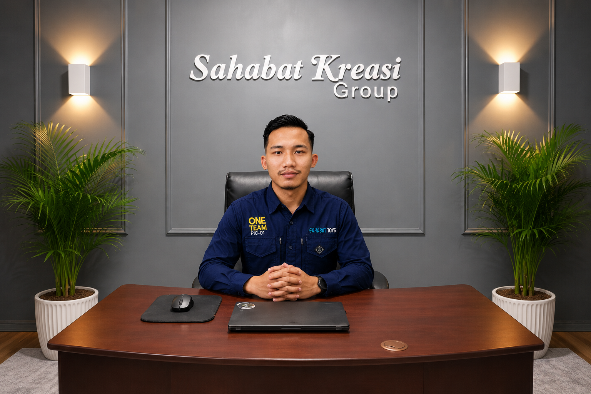

Distributor produk mainan, aksesoris, permen dan snack dengan sistem konsinyasi berbasis sistem renteng, melayani ratusan toko mitra di Jawa Timur dengan pendekatan yang transparan dan terpercaya.
PT. Sahabat Kreasi Group adalah perusahaan distribusi produk konsumen yang berfokus pada sistem renteng (display rack) konsinyasi, mencakup kategori mainan, aksesoris, dan permen/snack.
Berbasis di Jl. Penanggungan 1 Dusun Pakel, Desa Sukoreno, Kecamatan Prigen, Kabupaten Pasuruan, Jawa Timur, kami membangun jaringan distribusi ke ratusan toko mitra yang tersebar di berbagai wilayah sales territory, didukung tim sales lapangan yang melakukan kunjungan rutin untuk memastikan setiap rak renteng selalu tertata dan terisi.

Menjadi distributor sistem renteng konsinyasi terpercaya yang menjangkau lebih banyak mitra dan pelopor utama di Jawa Timur, dengan layanan yang transparan, rapi dan saling menguntungkan.
Menghadirkan produk berkualitas dengan sistem distribusi yang transparan, mendukung pertumbuhan toko mitra, dan menjaga hubungan kemitraan jangka panjang yang saling percaya.
*Visi & misi final yang selalu didedikasikan oleh perusahaan demi Indonesia Emas 2045.
PT. Sahabat Kreasi Group memulai usaha dengan nama awal Sahabat Toys pada tahun 2020 dan kemudian menjadi badan usaha pada tahun 2024 di Prigen, Pasuruan, Jawa Timur.
Jaringan toko mitra berkembang hingga mencapai ratusan lokasi di berbagai wilayah sales territory.
Membangun sistem Digitalisasi untuk mengelola distribusi, stok, dan kunjungan sales secara lebih rapi dan terwujudnya transparansi bagi mitra maupun karyawan.
Operasional PT. Sahabat Kreasi Group dikelola langsung oleh pendiri, memastikan setiap keputusan bisnis dan hubungan kemitraan dengan toko ditangani secara profesional dan bertanggung jawab.
Achmad Zulfan.